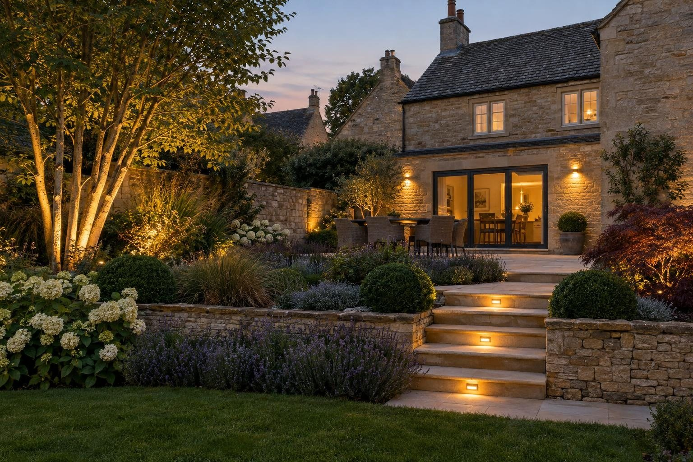
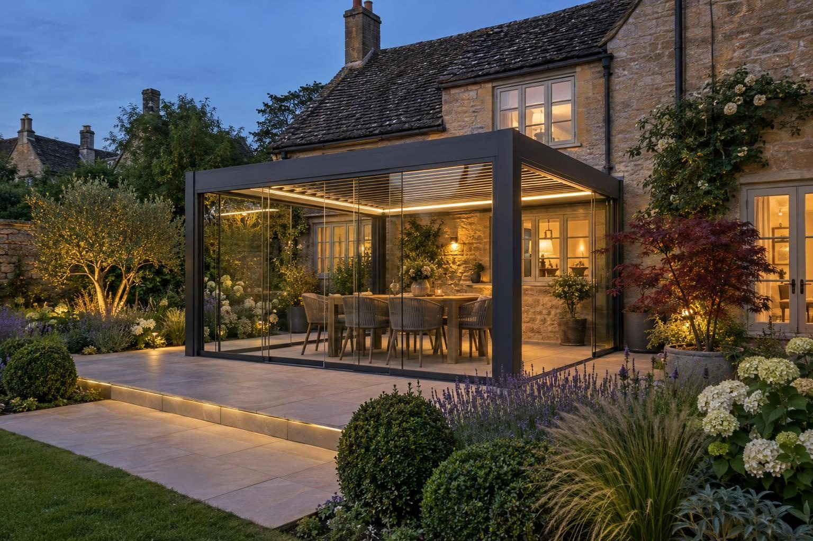
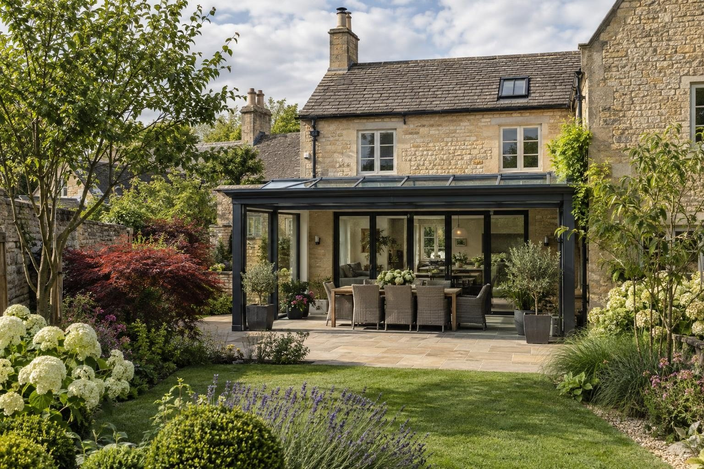
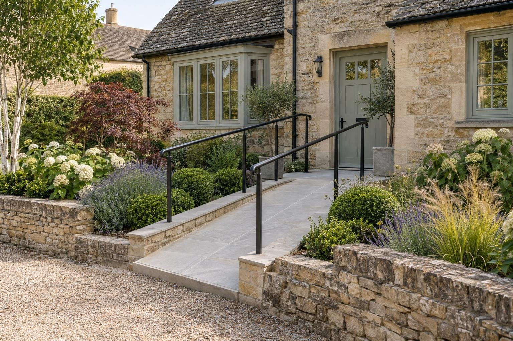

Driveways, gardens and building work in Stamford
Driveways, patios, garden transformations, extensions and conversions across Stamford and the villages around it.
For a typical Stamford drive of 30–55m², a resin bound driveway costs roughly £4,500–£12,000 and block paving £3,500–£9,250. A 20–35m² porcelain patio is roughly £3,000–£7,000, and a full garden transformation typically £15,000–£35,000. A new or wider entrance needs a dropped kerb from Lincolnshire County Council: £300 if the county council builds it, or £470 if an accredited contractor does, and we can build it for you.
- Council
- South Kesteven District Council; highways Lincolnshire County Council
- Postcode
- PE9
- Conservation
- Article 4 across the conservation area
- Ground
- Limestone; usually free-draining
Our 2026 guide prices, all in. Your fixed price comes in writing after the site visit. Council fees checked October 2026.
Homes, ground and conservation in Stamford
Stamford's centre is Georgian and older, built of local limestone under Collyweston slate, with more than 600 listed buildings. Victorian streets run out along Rutland Terrace, Empingham Road, Tinwell Road, Ryhall Road and Casterton Road, there is 1920s housing around Melbourne Road and New Cross Road, and new estates are growing on the north side of town.
Stamford sits on Lincolnshire Limestone with well-drained loamy soils, so many sites take a soakaway well. Old cellars, rubble fill and the Welland flood plain change that locally, so we check every site rather than assume.
Stamford was the first conservation area in Britain, designated in 1967, and since December 2018 an Article 4 direction across the whole conservation area removes permitted development for hard surfaces, walls, gates and fences, porches and extensions where they face a road, footpath or open space. In practice, most front driveway and boundary work in the conservation area needs planning permission, and the council's appraisal favours York stone, granite setts and natural materials over concrete paving and tarmac.
The Environment Agency runs a flood warning area for properties near the River Welland in Stamford. Check any address on the Environment Agency flood map.
Sources: Stamford Article 4 direction · Stamford conservation area appraisal.
Council rules and fees for Stamford
- Dropped kerbs: £300 if Lincolnshire County Council builds it (the council puts a typical crossing at £2,500–£3,500, tarmac only, 2.75m wide), or £470 if an accredited contractor builds it; built by the county council itself, or an accredited contractor with £10m public liability insurance and NRSWA-qualified operatives, which we can do for you. Lincolnshire County Council: apply for a dropped kerb
- Front driveways: Inside the Stamford conservation area, a new or altered hard surface facing a road needs planning permission because of the Article 4 direction, whatever the material. Outside it, a permeable drive, or one that drains to your own lawn or border, needs no planning permission. Planning Portal guidance
- Planning: householder applications cost £548 (national fee from April 2026); pre-application advice from South Kesteven District Council costs £90. Pre-application advice
- Building regulations: East Midlands Building Consultancy (South Kesteven's building control service). Garage conversion set by East Midlands Building Consultancy's fee schedule; we confirm the figure for your job; extension set by East Midlands Building Consultancy's fee schedule. Building control
- Trees: six weeks' notice for trees in a conservation area, consent for protected trees; both free. Planning Portal: tree consent
Checked October 2026.
Every service in Stamford
Driveways

Resin driveways

Block paving driveways

Tarmac driveways

Dropped kerbs

Permeable driveways

Driveway drainage

Driveway gates

Bin stores

Porcelain patios

Sandstone patios

Landscaping

Composite & timber decking

Fencing

Garden lighting

Louvred pergolas

Glass verandas

Outdoor kitchens

Fire pits & sunken seating

Hot tub & swim spa bases

Garage conversions

House extensions

Porch extensions

Accessible paths & ramps

Building services
A recent project in Stamford

Every service in Stamford
Driveways
- Driveways in Stamford
- Resin driveways in Stamford
- Block paving driveways in Stamford
- Tarmac driveways in Stamford
- Gravel driveways
- Dropped kerbs in Stamford
- Driveway repairs
- Permeable driveways in Stamford
- Driveway drainage in Stamford
- Driveway gates in Stamford
- Bin stores in Stamford
- Block paving cleaning
- Do I need planning for a driveway?
Patios and gardens
Outdoor living
Building work
“Really pleased with my new driveway. Beautifully finished, friendly professional workmen, would definitely recommend and will be using them again for the garden once other renovations complete.”
Driveway — Google review
“Absolutely great guys, job was done in good time and looks brilliant. No complaints, the driveway is immaculate. More work in the near future, thanks again!”
Driveway — Google review
Things people in Stamford ask us
How much does a driveway cost in Stamford?
Which council covers Stamford?
Do I need planning permission for a driveway in Stamford?
How quickly can you visit Stamford?
Request a site visit in Stamford
We measure up, check levels and drainage, and send a written proposal with the build-up, the programme and one whole price. No pressure and no follow-up sales calls.